To enlarge, click some photos which have titles in light blue or light yellow color background.
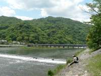 | 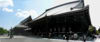 | 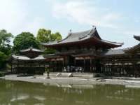 | 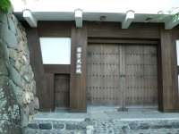 |
| Arashiyama | Nishi Honganji | Uji Byodoin | Inuyamajyo |
We left our home for Kyoto early in morning and drove speedways which was low cost (about \2,000) for holiday.
I went to Arashiyama because we arrived at Kyoto early than I thought.
Arashiyama is famous for good scenery, especially where we could see sometimes in contemporary dramas and period dramas.
Nishi Hongan-ji
Nishi Hongan-ji serves as the head temple of the Jodo Shinshu organization.
Toyotomi Hideyoshi donated this place where Nishi Honganji was moved (established) in 1591.
In Nishi Hongan-ji we have been sitting in front of Buddha early in the morning, praying with several monks and about thirty believers. After that seven people attended the ceremony to become Buddha's pupil and we were given each new name as a pupil. The ceremony was solemn and I felt refreshed.
Uji Byodo-in
This temple was originally built in 998 in the Heian period as a rural villa of Fujiwara no Michinaga, one of the most powerful members of the Fujiwara clan. This villa was changed to a Buddhist temple by Fujiwara no Yorimichi in 1052. The most famous building in the temple is the Phoenix Hall (hoo-do) or the Amida Hall, constructed in 1053.
Outside of this temple is picturesque to look but inside is old and vague.
We visited Inuyama-jo (Castle) which is one of national treasures early in the evening, but the gate was closed already.
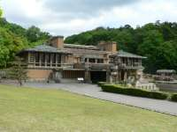 | 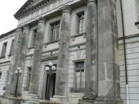 | 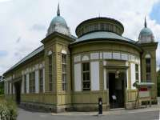 | 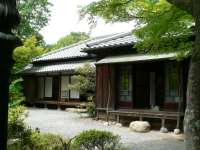 |
| Imperial Hotel | Cabinet Library | Uji-yamada Post Offic | House of Ogai and Soseki |
Meiji-mura shows sixty seven historical houses and buildings. We went on a stroll there for about five hours, looking and having a wonderful impression. It was fine, so especially the garden including ponds was beautiful.
By the way, there are several food shops and restaurants which reproduce Meiji period taste with old recipe. We tried to have that curry-bread, hamburger and rice-crape(crepe).
Meiji-mura (Meiji Village) was opened on March 18, 1965, as an open-air museum for preserving and exhibiting Japanese architecture of the Meiji period (1868-1912).
Main Entrance Hall and Lobby, Imperial Hotel
Uchisaiwai-chou Chiyoda-ku Tokyo, built in 1923
The main finish is Greenish tuff (volcanic rock) carved in geometric patterns, and yellow brick, while ferro-concrete is used to provide structural strength.
Cabinet Library
The The Imperial Palace, Chiyoda-ku Tokyo, built in 1911
Its design is genuine Renaissance style, and this is a perfect example of Meiji period brick-stone architecture.
Uji-yamada Post Office
Toyokawa-chou Ise, Mie-pref., built in 1909
This one-story wooden building with copper roofing has a conical domed roof at its center, and its facing is in a half-timber style.
House of Ogai Mori and Soseki Natsume
Sendagi Bunkyo-ku Tokyo,built in 1887
This is a typical middle-class residence of the time.
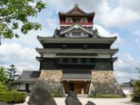 | 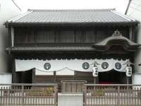 | 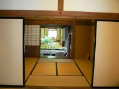 | 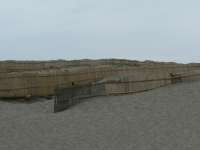 |
| Kiyosuzyou | Maysaka-jyuku waki-honjin 01 | Maysaka-jyuku waki-honjin 02 | Nakatajia-sakyu(dune) |
We left Meiji villege for Hamana-ko(lake), on the way we visited Kiyosu-jo(castle) which was restored in 1989.
Hamana-ko is famous for eels, and we tried to eat it. That tasted nice at famous local restaurant. However, the hotel we stayed was full of Chinese tourists. We felt worse because of their manners.
On the way of driving we stopped at Maysaka-jyuku waki-honjin and Nakatajia-sakyu(dune). Maysaka-jyuku waki-honjin which was used in Edo period for executives of Samurai to stay. Nakatajia-sakyu(dune) didn't surpprised me, because I had been to Totori-sakyu before.
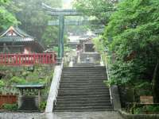 | 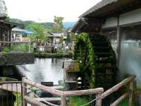 | 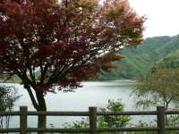 | 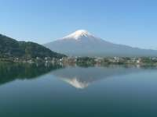 |
| Kunouzan-Toshogu | Oshino ha kai | Syojin-ko(lake) | Kawaguti-ko(lake) |
Kunouzan-Toshogu is a shurine which established for Tokugawa Ieyasu after his death. To go there we had to go up 1159 stone steps of stairs, and it was tough work for us.
Some small springs which get abundant subsurface water from Mt.Fuji are called Oshino-ha-kai .
Unfortunately, it was raining, but we went around Fuji-go-ko(Fuji five lakes), Yamanaka-ko/ Saki-ko Syojin-ko/ Motosu-ko/ Kawaguchi-ko, which surround Mt.Fuji.
We stayed at the lakeside of Kawaguchi-ko. Our hotel was occupied by Chinese tourists, too. They seem to be fond of Mt. Fuji.
Happily, next day we could look at inverted images of Mt.Fuji at kawaguti-ko.
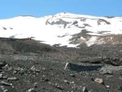 | 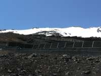 | 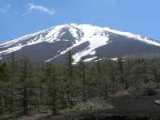 | 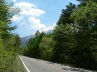 |
| Mt.Fuji 01 | Mt.Fuji 02 | Mt.Fuji 03 | Fuji Subaru Line |
It was a beautiful sunny day. We went to the five stage of Mt. Fuji on Fuji Subaru Line by car. Sky was high and green was refreshing. Then we climbed up to the six stage. At a little up place of six stage the top looked clear and so close with us.
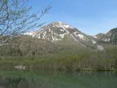 | 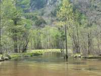 | 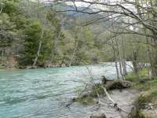 | 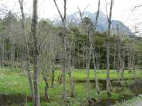 |
| Taisho-ike(pond) | Tashiro-ike(pond) | a river side | a path |
We took a stroll in Kamikochi. The river, trees, ponds and everything are quite natural and they gave us relief.
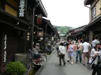 | 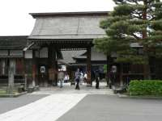 |
| historical stores | Takayama Jinya |
Edo period houses remain in the preserved area of Takayama.
And the rich atmosphere of Takayama castle town still lingers.
When we came here there were a lot of tourists for a holiday event.
Takayama Jinya is a former government outpost that was established in order to bring the Hida Province under the direct control of the Edo Bakufu (Shogunate).
{kind=link}
{kind=link}
{kind=link}
{kind=link}
{kind=link}
{kind=link}
{kind=link}
{kind=link}
{kind=link}
{kind=link}
{kind=link}
{kind=link}
{kind=link}
{kind=link}
{kind=link}
{kind=link}
{kind=link}
{kind=link}
{kind=link}
{kind=link}
{kind=link}
{kind=link}
{kind=link}
{kind=link}
{kind=link}
{kind=link}